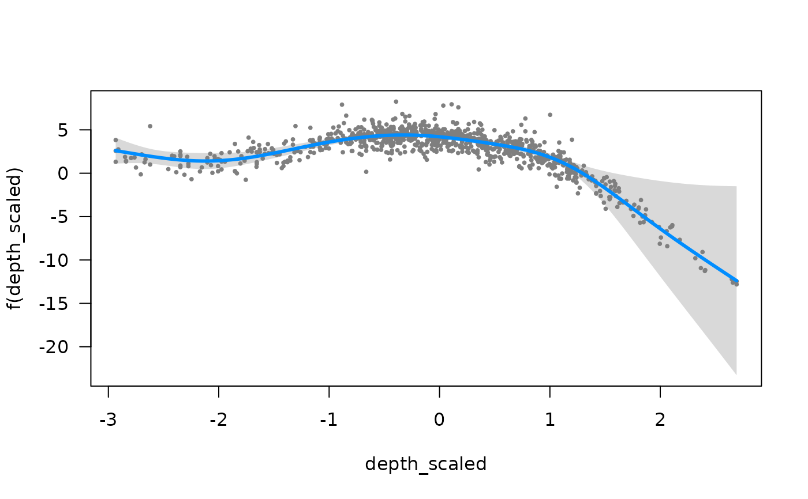
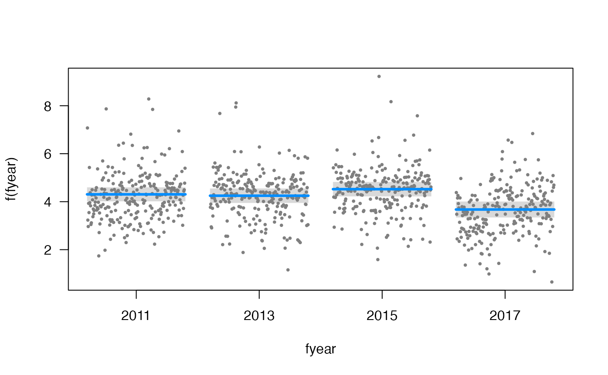
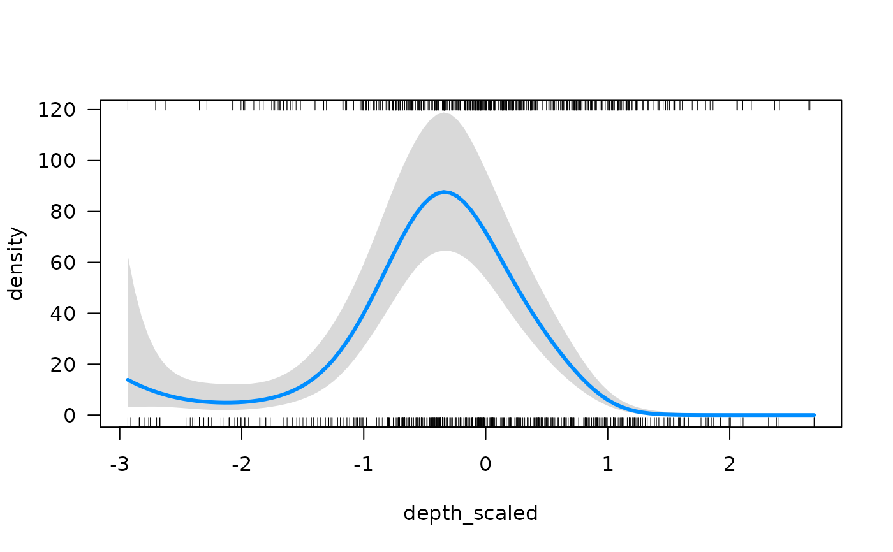
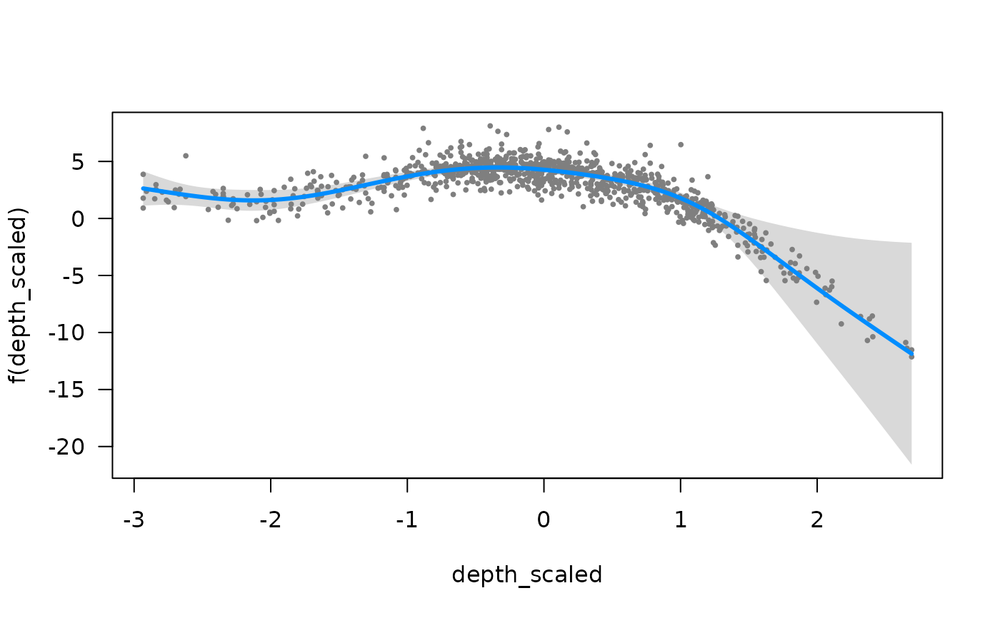
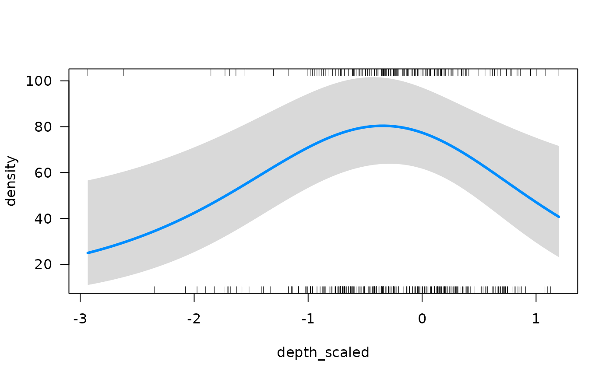
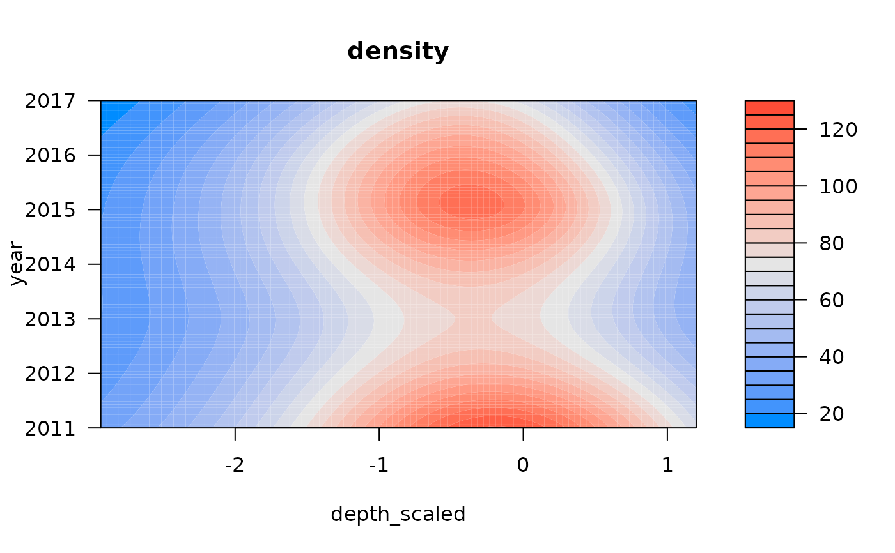
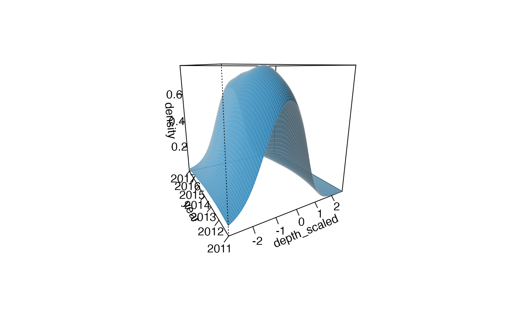
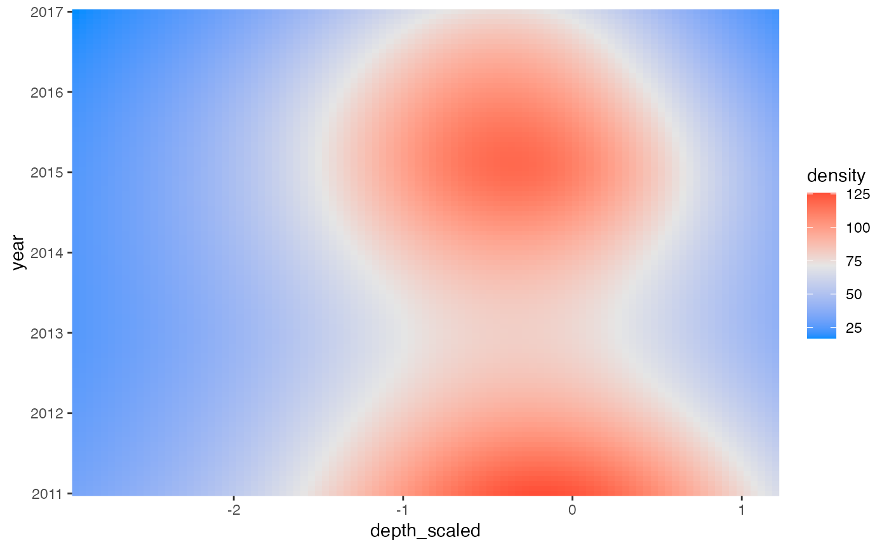

sdmTMB models fit with regular (non-delta) families can be passed to
visreg::visreg() or visreg::visreg2d() directly. Examples are shown
below. Delta models can use the helper functions visreg_delta() or
visreg2d_delta() described here.
Fit from sdmTMB()
Any arguments passed to visreg::visreg() or
visreg::visreg2d()
1st or 2nd delta model
A plot from the visreg package. Optionally, the data plotted invisibly if
plot = FALSE. This is useful if you want to make your own plot after.
Note the residuals are currently randomized quantile residuals, not deviance residuals as is usual for GLMs with visreg.
if (inla_installed() &&
require("ggplot2", quietly = TRUE) &&
require("visreg", quietly = TRUE)) {
pcod_2011$fyear <- as.factor(pcod_2011$year)
fit <- sdmTMB(
density ~ s(depth_scaled) + fyear,
data = pcod_2011, mesh = pcod_mesh_2011,
spatial = "off",
family = tweedie()
)
visreg::visreg(fit, xvar = "depth_scaled")
visreg::visreg(fit, xvar = "fyear")
visreg::visreg2d(fit, xvar = "fyear", yvar = "depth_scaled")
# \donttest{
visreg::visreg(fit, xvar = "depth_scaled", scale = "response")
v <- visreg::visreg(fit, xvar = "depth_scaled")
head(v$fit)
# now use ggplot2 etc. if desired
# Delta model example:
fit_dg <- sdmTMB(
density ~ s(depth_scaled, year, k = 8),
data = pcod_2011, mesh = pcod_mesh_2011,
spatial = "off",
family = delta_gamma()
)
visreg_delta(fit_dg, xvar = "depth_scaled", model = 1, gg = TRUE)
visreg_delta(fit_dg, xvar = "depth_scaled", model = 2, gg = TRUE)
visreg_delta(fit_dg,
xvar = "depth_scaled", model = 1,
scale = "response", gg = TRUE
)
visreg_delta(fit_dg,
xvar = "depth_scaled", model = 2,
scale = "response"
)
visreg_delta(fit_dg,
xvar = "depth_scaled", model = 2,
scale = "response", gg = TRUE, rug = FALSE
)
visreg2d_delta(fit_dg,
xvar = "depth_scaled", yvar = "year",
model = 2, scale = "response"
)
visreg2d_delta(fit_dg,
xvar = "depth_scaled", yvar = "year",
model = 1, scale = "response", plot.type = "persp"
)
visreg2d_delta(fit_dg,
xvar = "depth_scaled", yvar = "year",
model = 2, scale = "response", plot.type = "gg"
)
# }
}







